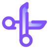
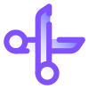
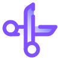
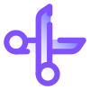

Камінь, Ножиці, Папір
 



Це класична гра "Камінь, Ножиці, Папір". Гравець вибирає один з варіантів, а комп'ютер вибирає свій варіант. Правила:
Камінь визнана на міжнародному рівні за стиснутим кулаком, де великий палець не прихований. Це також один із найпопулярніших початкових ходів, і тому він вважається одним із найпопулярніших жестів рукою.
Папір подається так само, як камінь, за винятком того, що в цьому випадку всі пальці та великий палець витягнуті таким чином, що всі вони дивляться в одному напрямку. Вертикальний папір або рукостискання суворо заборонені на турнірах з «Кам’яних ножиць», оскільки вони можуть нагадувати ножиці, що може призвести до непотрібної плутанини.
Ножиці кидають так само, як камінь, де руку стискають у кулак, але вказівний і середній пальці витягують вперед, щоб утворити кут від 30 до 45 градусів у спосіб, який нагадує пару ножиць. На турнірах суворо заборонено використовувати горизонтальні ножиці, оскільки вони можуть нагадувати форму паперу.